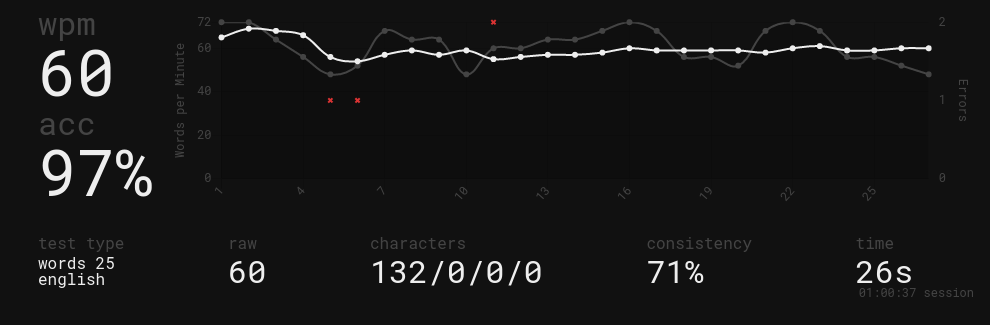

Using The Colemak Keyboard Layout - Week 2
2022-02-02
Progress has dramatically slowed down since last week. Last week, I went from 1 wpm to 30 wpm, and this week I went from 30 wpm to 45 wpm. As I get better at typing, it will only get harder and will take longer to see tangible results. On the other hand, Nathaniel managed to achieve 69 wpm as if it were nothing.
I have a theory as to why my typing speed feels like it has hit a wall sometimes. When I type in QWERTY, my hands are in different places than when I type in Colemak. I type incorrectly when I use QWERTY. I use ~5 fingers vs 9 fingers on Colemak (I don't use my right thumb). So in essence, I am really just learning how to type again. Using the right technique to type in QWERTY, I type at about 30 wpm.
In terms of my goals I set last week, I achieved well beyond all 3 goals.
-
I average around 45 wpm
-
My PB is 60 wpm
-
I use Colemak for ~90% of the time now

Comparison to QWERTY
I will probably have more to write once I'm even faster, but as of now, I can see that I am much more consistent. On QWERTY, I can be as slow as 50 wpm and as fast as 90 wpm. With Colemak, the variance between my average (45ish), fast (55ish), and slow (30) is much closer. Since commonly used letters are in sensible places and I can basically roll my fingers instead of reaching to the corner as if I'm playing an osu! jump map, I get tired less easily and make less mistakes.
Goals For Next Week:
-
Achieve/beat Nathaniel's 69 wpm
-
Average at least 50 wpm
Since I've got midterms, I don't want to spend too much time practicing so I'll keep it reasonable. But who knows, I may even average 60 wpm by next week.
*By the way I wrote all this in Colemak and it took ~20 mins!! From this point onwards, assume that everything is written in Colemak.